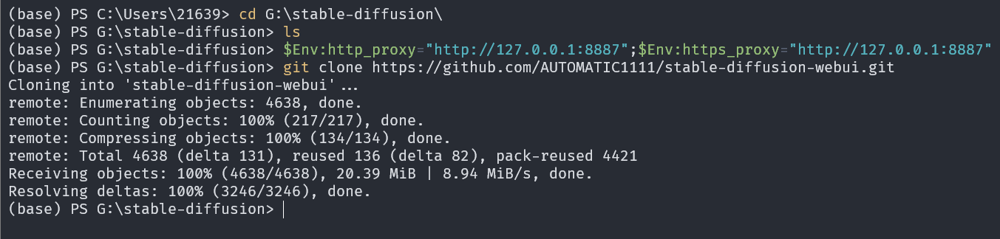

前两天的时候看到了 NovelAI 的模型给泄漏出来了，于是乎光速下载下来开始尝试。
最开始弯路还是走了不少，不过最后折腾下来感觉还是可以的。一开始在 Linux 上整完了配置，然后顺带着给群友写了一份配置说明（windows 下面的）。
一开始走了不少弯路，主要是拿到手还是无从下手，受了高人指点拿 Stable-Diffusion WebUI 配置了基本上一下子就跑起来了。
然后为了帮群友配置，写了下面的这一份配置说明。
虽然我自我感觉写的教程很完善，不过还是被问到了各种问题。
仔细想想我感觉写教程的时候还是在用一种面向计算机类学生的思维在写，这也导致了好多人看到之后会抱怨各种问题。
我感觉这个也是许多人的通病，就是被自己的知识所蒙蔽了，以为别人都已经了解了许多自己看来 “基础” 的知识。
把写的教程贴在这，然后用附注标记我教程写的问题。
# NovelAI Leak Model Setup
# 0、引言
# 前置需求
写这些东西很多人可能不会看？
1、稳定的网络连接
2、至少 20GB 的磁盘空间
3、独立显卡，尽量是 Nvidia
# 关键点
高亮是真的很重要，加粗许多人可能不看的。
- 在终端中，按下
tab可以自动补全，比如说有一个文件叫做kfcvme50，你输入了kfc，按下tab就会自动补上后面的部分。 - 网络的稳定性是关键，如果你遇到了例如
connection failed，connection refused之类的问题，可以重试几次。如果下载速度非常慢，检查一下步骤 3。 - 善用 baidu 和 google。
# 1、安装依赖软件
git https://git-scm.com/downloads
git 是一款版本管理工具，安装 git 时，请保证勾选 “添加到环境变量 PATH” 的选项。
这一步不少人会漏掉…… 难绷……
其实本来想解释一下各个工具的作用的，想想还是算了……
同时，模型依赖 Python 运行，请前往 python.org 下载 3.10.6 及以上版本的 python 。在安装时请勾选 “添加到 PATH”，同时勾选 “安装 pip”。
# 2、Windows Terminal（可选）
"Optional" 这个东西好多人直接忽略了，提醒了才会说，“哦，原来是可选啊！”
Windows Terminal 是一款现代化的终端模拟器，相较于 Windows 内置的终端模拟器，有着更现代化的 UI 与更强大的功能。
在 Windows 商店中可以选择安装该软件。
这些额外的配置应该直接贴链接给人家，不能一句话带过。
对于 Microsoft Store 无法打开的情况，你可以尝试使用 UWP 回环等手段。
安装 Windows Terminal 后，鼠标右键菜单中会出现 Open in Terminal 的选项，使用这个选项可以在当前位置打开 Windows Terminal。
# 3、代理设置（可选）
写教程的时候还是应该更详细一些，我用的 Clash .Net 直接右键就有选项。而 Clash for Windows 里面 Dashboard 有复制代理到终端的选项。不要以为所有人都能找到这些功能！一步一步给出截图！
另外这里写的是 “（可选）” 是大问题，我高估了大家的网络环境。
打开你的终端软件（可以是 Windows Terminal 或 Powershell，不建议 CMD），输入：
$Env:http_proxy="http://127.0.0.1:8887";$Env:https_proxy="http://127.0.0.1:8887" |
这种因人而异的配置不要直接给出来，有人会直接把它们复制到自己的终端里，即使自己的代理配置不是这样的。
另外分不清 Powershell 和 cmd 的大有人在！
这里的地址和端口号配置请参考你的代理软件，例如 Clash 应该有复制代理到终端的选项。

这条命令使得终端的网络访问会先经由你的代理软件，以规避防火墙的拦截。
注意：终端代理设置完成后，你一旦关闭这个终端软件，下次打开需要重新进行这个步骤！
# 4、clone 源码仓库
请前往你所要放置该项目的位置。本说明选择 G:\stable-diffusion 作为工程位置，你可以根据自己需求自行选择，但请注意保留至少 15GB 的可用空间。
这里我假定大家都会 Powershell 的操作了……
对于分不清 ps 和 cmd 的，后面坑太多了……
注意：如果你的终端显示的路径不是你需要的位置，使用：
cd 你需要的位置 | |
举个例子，如果你要前往C:/Users/test目录，那么你将输入 | |
cd C:/Users/test |
这个一定要强调！好多人不知道终端打开的默认位置，直接就往里面粘命令。
如果你在某一个步骤中不慎关闭了终端软件，重新打开时请确定当前位置正确。
在这里，我们采用 stable-diffusion-webui 仓库作为前端。
执行命令：
git clone https://github.com/AUTOMATIC1111/stable-diffusion-webui.git |
** 注意：** 鉴于 Github 在国内的连接稳定性，如果上一步未设置代理，你可能会面临速度慢、连接失败等问题。
执行完成之后可以看到当前目录下已经出现了 stable-diffusion-webui 的文件夹。
# 5、下载 NovelAI 文件
本次泄露的文件结构如下：
- stableckpt/ - Stable Diffusion checkpoints
- animefull-latest - The model NovelAI uses in production
- animefull-final-pruned --- 这里是你需要的文件
- workspace/ - Code used to train/run/finetune models
- sd-private.tar.zst - Stuff to train Stable Diffusion
- github/ - Code taken from GitHub. CREDENTIALS SCRUBBED
- novelai/ - From NovelAI org
- *.tar.zst Archived git repos, public AND PRIVATE
- aboutus.gpg - Our public GPG key
- sha256sum - SHA256 sums of every file
- sha256sum.sig Detached signature for the sums, signed by our GPG key
纠一个错，请用 animefull-latest 里面的模型。
同时修改 stable-diffusion-webui/modules/sd_models.py 第 126 行：
sd = pl_sd["state_dict"] |
修改为
if "state_dict" in pl_sd: | |
sd = pl_sd["state_dict"] | |
else: | |
sd = pl_sd |
如果仅仅需要运行模型，你只要下载 stableckpt/animefull-final-pruned 下的 model.ckpt 文件，大小约 4GB。
这一步考虑网络情况，你可以和前几个步骤（以及后面的部分步骤）并行进行。
# 6、将模型移动至项目中
纠错。请同时将泄漏的模型 stableckpt/animevae.pt 复制到 \models\Stable-diffusion 下，改名为 model.vae.pt 。新建文件夹 \models\hypernetworks ，将 stableckpt/modules/modules/ 下所有文件复制到其中。
这一步可以通过命令行的 cp 命令实现，这里仅讲述图形化的方式。
打开上一步你下载模型的文件夹，复制 model.ckpt 文件，将其复制到你第 4 步 clone 的 stable-diffusion-webui 文件夹下 \models\Stable-diffusion 的位置。
如果你正确地找到了这个文件夹，你会看到一个叫做 Put Stable Diffusion checkpoints here.txt 的文件。把 model.ckpt 文件复制到这里。
# 7、运行
输入下面的命令进入 stable-diffusion-webui 目录下：
cd stable-diffusion-webui |
写了输入命令运行，还有人直接双击运行。
输入下面的命令运行：
.\webui.bat
接下来会有较长的安装过程，在这个过程中请保持耐心。
在这个步骤中，如果出现报错 check_hostname requires server_hostname ，请关闭梯子的系统代理（以 Clash 为例）。
如果出现其他网络错误，请重试。
# 对于没有耐心的人
如果你无法忍受这样的煎熬，有一个快捷一些的办法。
你在这个页面卡了很久的话，输入 Ctrl+C 结束当前的过程。接下来，输入：
.\venv\Scripts\Activate.ps1 |
这条命令将会启用 venv 环境，这是一个独立于你电脑已有环境的新的 Python 环境。执行之后你应该会看到前面出现了一个绿色的 (venv) 标记。
如果你看到了报错：因为在此系统上禁止运行脚本
请使用管理员权限打开一个 Powershell 窗口，输入
set-executionpolicy remotesigned。
接下来输入下面的命令：
pip install -r requirements.txt | |
如果你发现下载速度慢，可以试一下下面的： | |
pip install -r requirements.txt -i https://pypi.tuna.tsinghua.edu.cn/simple |
这会在目前的环境下安装所有的 Python 依赖库。* -i 参数后面的网址是清华大学的开源镜像站，你可以根据需要换成 USTC、阿里云等其他的。* 在网上搜索 xx开源镜像站 ，在其中寻找 PyPi 的配置说明。
如果出现安装过程卡住的情况，可以尝试根据 WARNING 的提示执行一些命令，更新 pip 是一个可能的选择，输入 <根据你的具体路径修改>\stable-diffusion-webui\venv\Scripts\python.exe -m pip install --upgrade pip -i https://pypi.tuna.tsinghua.edu.cn/simple 有可能解决你的问题。
部分依赖库如
basicsr安装过程需要额外下载，如果未设置终端代理安装过程可能会非常慢。
安装完成后大概如上图所示。
输入 deactivate 。
在完成了上面的步骤之后，继续执行 webui.bat
如果 webui.bat 报错：Torch is not able to use GPU; add --skip-torch-cuda-test to COMMANDLINE_ARGS variable to disable this check
你可以尝试一下进入虚拟环境安装 cuda 版本的 Pytorch：
.\venv\Scripts\Activate.ps1
生成 pdf 的时候带上行号，否则会有人把下面的一行命令当成两行。
pip install torch==1.12.1+cu116 torchvision==0.13.1+cu116 -f https://download.pytorch.org/whl/torch_stable.html
然后 deactivate 离开虚拟环境，重新运行 webui.bat 。
如果 webui.bat 报错 AssertionError: Couldn't find Stable Diffusion in any of: ['G:\\stable-diffusion\\stable-diffusion-webui\\repositories/stable-diffusion', '.', 'G:\\stable-diffusion']
进入 stable-diffusion-webui\repositories 下面，删除掉 stable-diffusion 文件夹并打开终端，运行：
git clone https://github.com/CompVis/stable-diffusion.git
# 8、完成
如果你看到了这些，那么已经要成功了。
等待下载完成，出现下面的：
在浏览器中打开这个页面：
完成！